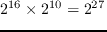

Next: CUDA Memory architecture Up: Parallel Computing Previous: General Purpose computing on Contents
Starting from the top down, a host machine can have multiple GPU devices, which can all be individually addressed for asynchronous execution in parallel. Below this level, and as shown in Figure 21, there are logical 'Grids', which contain logical 'Blocks' of threads. These Grids and Blocks are the fundamental form of execution parallelism. As shown in Figure 21, Grids can be thought of as two dimensional arrays of Blocks, and Blocks are thought of as three dimensional arrays of Threads. It is these threads that actually execute any particular workload.
As stated, the level of parallelism is defined at the kernel invocation stage and (until very recently2.35) only one kernel can run on a single device at a time. Following the SIMD model, parallelism is attained by per-thread self-indexing. In the case of CUDA, each thread could generate a unique 1D execution index using a combination of runtime variables that are pro grammatically exposed through the CUDA Driver API, as shown in Figure 23. In this particular example, it assumed that both Grid and Block dimensions are 1D. This is useful in this case for scalar multiplication of linear arrays, and could process input data containing , or over 67 million values2.36. CUDA introduces several additional keywords to the C language, in this case "__global__", which indicates that the function is executed on the device, but can be called from the host. A summary of these function declaration keywords is shown in Table 2.1
For more parallelism, and more context relevance, consider scalar multiplication of large matrices. The previously stated indexing scheme could be used sequentially, i.e taking each row of the matrix in turn and farming the computation of that row to the GPU, but as stated, CUDA allows (actually encourages) multi-dimensional indexing, so each thread execution could be tasked with modifying multiplying one matrix element by 2D addressing, as shown in Figure 24. This form of parallelism theoretically allows for up to or about 4.5 quadrillion threads, (i.e operating on a square matrix of side )2.37.
Moving into the practical realm, once a kernel is launched, the CUDA runtime system generates the corresponding logical grid of threads. These threads are assigned to execution resources such as shared memories and thread registers2.38 on a block-by-block basis2.39. These resources are organised into streaming multiprocessors (SMs), the number of which vary depending on the particular hardware, but usually around 15 are active. These SMs can each be assigned up to 32 thread-blocks, each of which is executed on a separate Streaming Processor (SP) core. These cores can handle up to 48 threads in parallel. In the case of the Tesla C2050, this means that over 20,000 threads can be 'simultaneously' executed.
Note that this does not limit the grid and block dimensions; groups of threads, termed warps, are swapped in and out of the SM's regularly, making execution tolerant of long-latency operations such as global memory access. This warping of threads is also an important concept for thread-divergence; when runtime-dependant conditional statements in kernel execution have different branching behaviours in threads that are in the same 'warp', the warp is actually executed twice; once for the major condition, and once for the minor condition. Between these two executions, the results obtained from the 'minor' path are discarded and during the minor execution, the results from the major path are also discarded. It is for this reason that conditional behaviour should be avoided in a GPU environment (Figure 25 demonstrates this. Adapted from Kayvon Fatahalian (2008)).
 |
As mentioned, resource allocation is partially decided upon the memory requirements of a particular kernel. These and other memory related concepts are covered in the following section.